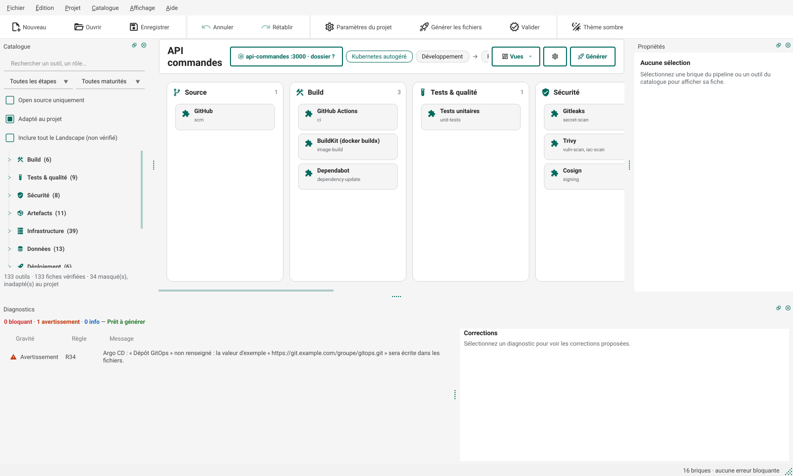

API sur k3s en GitOps¶
Objectif : une API Node.js construite par GitHub Actions, publiée dans le registre de GitHub, et déployée par Argo CD sur un cluster k3s, en trois environnements : développement, préproduction, production.
Il faut : un dépôt GitHub ; une machine Linux pour le cluster k3s, dimensionnée pour la plateforme
(Argo CD, Traefik, cert-manager, Prometheus, Grafana) et trois environnements ; kubectl sur le poste. Durée : une heure environ.

1. Décrire le projet¶
Ctrl+N ouvre l'assistant :
- Application : nom API commandes, langage Node.js, image api-commandes, port 3000 (ou le dossier de l'application, que l'assistant analyse).
- Code et intégration continue : GitHub ; GitHub Actions est choisie d'office.
- Hébergement : Kubernetes autogéré (k3s).
- Environnements et options : Développement → préproduction → production, et cocher « Déploiement GitOps avec Argo CD (Kubernetes) ».
- Récapitulatif : « Créer le projet ».
Le pipeline compte seize briques. k3s est installé sans son Traefik intégré, puisque Traefik est déjà dans
le pipeline (voir infra/cluster/install-k3s.sh) ; cert-manager fournit les certificats.
2. Désigner le dépôt GitOps¶
Un avertissement R34 signale le paramètre « Dépôt GitOps » d'Argo CD, resté à sa valeur d'exemple.
Sélectionner Argo CD (étape Déploiement) et saisir l'adresse du dépôt qu'Argo CD surveillera, par exemple
https://github.com/mon-organisation/api-commandes.git : le dépôt de l'application convient (les commits de la
CI y portent [skip ci]), un dépôt dédié aussi.
3. Générer¶
Ctrl+G, puis « Exporter vers Git… » ou « Écrire dans un dossier… ». Les fichiers principaux :
| Fichier | Rôle |
|---|---|
.github/workflows/pipeline.yml |
tests, Gitleaks, image construite et poussée dans le registre de GitHub, Trivy, signature Cosign ; puis, pour chaque environnement, la mise à jour de l'étiquette de l'image dans le dépôt GitOps |
charts/api-commandes/ |
le chart Helm de l'application, avec un fichier de valeurs par environnement (values-dev.yaml, values-staging.yaml, values-production.yaml) |
deploy/argocd/application.yaml |
les applications Argo CD, une par environnement |
infra/cluster/install-k3s.sh |
l'installation de k3s réglée pour ce pipeline |
platform/install.sh |
Argo CD, Traefik, cert-manager, Prometheus et Grafana depuis leurs charts officiels |
scripts/test-kind.sh |
le déploiement d'essai dans un cluster kind jetable |
.github/dependabot.yml |
les mises à jour de dépendances, déduites du langage et de la CI |
4. Mettre en route¶
docs/mise-en-route.md donne les commandes ; en résumé :
- Cluster et plateforme : sur la machine,
sudo bash infra/cluster/install-k3s.sh; récupérer le kubeconfig (/etc/rancher/k3s/k3s.yaml, adresse du serveur à corriger), puis depuis le postebash platform/install.sh, et vérifier que tous les pods tournent. - Argo CD : un jeton en lecture seule sur le dépôt GitOps, déclaré par un secret étiqueté, puis
kubectl apply -f deploy/argocd/application.yaml; la commande d'attente fournie suit la synchronisation. - Variables de la CI :
GITOPS_TOKEN(jeton autorisé à pousser sur le dépôt GitOps) etGITOPS_REPO, déclarées parbash scripts/ci-variables.sh(outilgh). - Approbation de la production : dans GitHub, Settings › Environments › production, ajouter des relecteurs obligatoires ; le job de production attend leur accord.
- Premier déploiement : pousser sur la branche principale. La CI publie l'image et met à jour l'étiquette dans le dépôt GitOps ; Argo CD l'applique à sa lecture suivante (trois minutes au plus).
5. Vérifier¶
- Avant même d'avoir un cluster : Projet › Valider (Ctrl+Maj+V), puis « Tester dans kind… » dans le même
dialogue, déploie le chart dans un cluster kind jetable (Docker, kind et Helm requis sur le poste). En ligne de
commande :
devops-builder test-kind api-commandes.devops.yaml --env dev. - Sur le cluster :
kubectl -n argocd get applications, puiskubectl -n api-commandes rollout status deployment/api-commandes.
Aller plus loin¶
- Flux à la place d'Argo CD : retirer Argo CD (Suppr) et ajouter Flux depuis le catalogue ; la règle R02 empêche d'en garder deux.
- Kustomize à la place de Helm : l'assistant choisit Kustomize si l'application en contient déjà ; sinon, remplacer la brique Helm par Kustomize dans l'étape Déploiement.
- Connexion unique : l'option « Keycloak » ou « Dex » de l'assistant relie Argo CD et Grafana au même fournisseur d'identité.